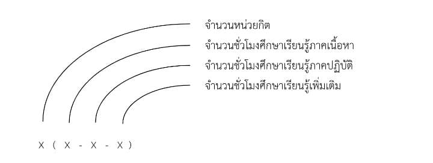

หมวดที่ 2 โครงสร้างหลักสูตร
โครงสร้างหลักสูตร
- จำนวนหน่วยกิตรวมตลอดหลักสูตร
- 30 ชั่วโมง
- 1.กลุ่มวิชาพื้นฐานมะพร้าว
- 4 หน่วยกิต
- 2.กลุ่มวิชาชีพมะพร้าว
- 12 หน่วยกิต
- 3.กลุ่มวิชาส่งเสริมการท่องเที่ยว
- 10 หน่วยกิต
- 4.กลุ่มวิชาการจัดการการท่องเที่ยววิถีพร้าว
- 4 หน่วยกิต
ห้องเรียน
ประกอบไปด้วยห้องเรียนชุมชน 4 ชุมชน
ที่ได้เลือกจากคุณสมบัติการเป็นชุมชนที่มีการประกอบอาชีพเกี่ยวกับมะพร้าวเป็นอัตลักษณ์ของชุมชนในพื้นที่อำเภอทับสะแก
บางสะพาน และบางสะพานน้อย จังหวัดประจวบคีรีขันธ์
และเป็นชุมชนท่องเที่ยวที่ดำเนินการโดยนิติบุคคลที่เกี่ยวกับการท่องเที่ยว ได้แก่
01 ห้องเรียนบ้านหินเทิน หมู่ 5 ตำบลแสงอรุณ อำเภอทับสะแก จังหวัดประจวบคีรีขันธ์
02 ห้องเรียนบ้านทุ่งประดู่ หมู่ 1 ตำบลทับสะแก อำเภอทับสะแก จังหวัดประจวบคีรีขันธ์
03 ห้องเรียนบ้านม้าร้อง หมู่ 4 ตำบลพงศ์ประศาสน์ อำเภอบางสะพาน จังหวัดประจวบคีรีขันธ์
04 ห้องเรียนบ้านทุ่งสะท้อน หมู่ 6 ตำบลปากแพรก อำเภอบางสะพานน้อย จังหวัดประจวบคีรีขันธ์
05 ห้องเรียนรวม เป็นการรวมทั้ง 4 ชุมชนไว้ในวิชาการจัดการการท่องเที่ยววิถีพร้าวโดยชุมชน
รายวิชา
- 01 กลุ่มวิชาพื้นฐานมะพร้าว
- (4 หน่วยกิต)
- 010201 วิชาพงศาวดารมะพร้าว (ห้องเรียนบ้านทุ่งประดู่)
- 2(2-0-4)
- 010202 วิชามะพร้าวในชีวิตประจำวัน (ห้องเรียนบ้านทุ่งประดู่)
- 2(2-0-4)
- 02 กลุ่มวิชาชีพมะพร้าว
- (12 หน่วยกิต)
- 020401 วิชาล้งมะพร้าว (ห้องเรียนบ้านทุ่งสะท้อน)
- 2(2-0-4)
- 020402 วิชาเทคโนโลยีชาวบ้านสวนมะพร้าว (ห้องเรียนบ้านทุ่งสะท้อน)
- 2(2-0-4)
- 020403 วิชาการจัดการผลิตภัณฑ์มะพร้าว (ห้องเรียนบ้านทุ่งสะท้อน)
- 2(2-0-4)
- 020104 วิชาทำน้ำตาลมะพร้าว (ห้องเรียนบ้านหินเทิน)
- 2(2-0-4)
- 020105 วิชาร้อยเรียงกะลามะพร้าว (ห้องเรียนบ้านหินเทิน)
- 2(2-0-4)
- 020106 วิชาเลี้ยงผึ้งโพรง (ห้องเรียนบ้านหินเทิน)
- 2(2-0-4)
- 03 กลุ่มวิชาส่งเสริมการท่องเที่ยว
- (10 หน่วยกิต)
- 030201 วิชามะพร้าวเชิงสร้างสรรค์ (ห้องเรียนบ้านทุ่งประดู่)
- 2(2-0-4)
- 030302 วิชาโฮมสเตย์ถิ่นมะพร้าว (ห้องเรียนบ้านม้าร้อง)
- 2(2-0-4)
- 030403 วิชาเมนูมะพร้าว (ห้องเรียนบ้านทุ่งสะท้อน)
- 2(2-0-4)
- 030304 วิชาการจัดการอาหารสำหรับนักท่องเที่ยว (ห้องเรียนบ้านม้าร้อง)
- 2(2-0-4))
- 030305 วิชานันทนาการมะพร้าว (ห้องเรียนบ้านม้าร้อง)
- 2(2-0-4)
- 04 กลุ่มวิชาการจัดการการท่องเที่ยววิถีพร้าวโดยชุมชน
- (4 หน่วยกิต)
- 040501 วิชาการจัดการการท่องเที่ยวโดยชุมชนวิถีพร้าวโดยชุมชน (ห้องเรียนรวม)
- 4(4-0-8)
แผนการศึกษาเรียนรู้
แนะนำให้ผู้ศึกษาเรียนรู้ ศึกษาเรียนรู้เรียงลำดับกลุ่มวิชา ดังนี้
01 กลุ่มวิชาพื้นฐานมะพร้าว
02 กลุ่มวิชาชีพมะพร้าว
03 กลุ่มวิชาส่งเสริมการท่องเที่ยว
04
กลุ่มวิชาการจัดการการท่องเที่ยววิถีพร้าวโดยชุมชนและสามารถศึกษาเรียนรู้รายวิชาที่อยู่ภายในแต่ละกลุ่มก่อนหลังได้ตามอัธยาศัย
การจัดรหัสและหน่วยกิตรายวิชา
ความหมายของรหัสรายวิชา การจัดรหัสรายวิชา กำหนดด้วยตัวเลข 6 หลัก ดังนี้

กลุ่มวิชา
01-กลุ่มวิชาพื้นฐานมะพร้าว
02-กลุ่มวิชาชีพมะพร้าว
03-กลุ่มวิชาส่งเสริมการท่องเที่ยว
04-กลุ่มวิชาการจัดการการท่องเที่ยววิถีพร้าวโดยชุมชน
ห้องเรียน
01-บ้านหินเทิน
02-บ้านทุ่งประดู่
03-บ้านม้าร้อง
04-บ้านทุ่งสะท้อน
ลำดับในแต่ละกลุ่มวิชา
เรียงลำดับ 01-02-03.....
การกำหนดหน่วยกิตและชั่วโมงเรียน จะกำหนดเป็นตัวเลขตามรหัส ที่มีความหมายดังนี้

คำอธิบายรายวิชา
วิชาบังคับก่อน
ควรศึกษาเรียนรู้ตามลำดับกลุ่มวิชาที่ 01 ถึง กลุ่มวิชาที่ 04 ส่วนลำดับวิชาในแต่ละกลุ่มวิชา
สามารถเลือกศึกษาเรียนรู้ได้ตามอัธยาศัยไม่จำเป็นต้องเรียงลำดับ
รายวิชา
01 กลุ่มวิชาพื้นฐานมะพร้าว (4 หน่วยกิต)
010201วิชาพงศาวดารมะพร้าว 2(2-0-4)
วิชาแนะนำก่อน : ไม่มี
ประวัติความเป็นมาการปรากฏมะพร้าวในประเทศไทย พฤกษศาสตร์มะพร้าวไทย การปลูกและบำรุงต้นมะพร้าว
010202 วิชามะพร้าวในชีวิตประจำวัน 2(2-0-4)
วิชาแนะนำก่อน : ไม่มี
ประโยชน์ของมะพร้าวจากรากถึงยอด การนำมะพร้าวจากสวนมาใช้ประโยชน์ในครัวเรือน การเลือกผลมะพร้าว
สอยมะพร้าว
ปลอกมะพร้าว การคั้นน้ำกะทิ และการใช้กะทิในอาหาร
02 กลุ่มวิชาชีพมะพร้าว (12 หน่วยกิต)
020401 วิชาล้งมะพร้าว 2(2-0-4)
วิชาแนะนำก่อน : วิชากลุ่มวิชาพื้นฐานมะพร้าว
การนำผลมะพร้าวลงจากต้นมะพร้าว การลำเลียงมะพร้าวจากสวนมายังล้งมะพร้าว การจัดการล้งมะพร้าว
การรับซื้อและการจัดการผลมะพร้าว การขายและขนถ่ายผลมะพร้าว
020402 วิชาเทคโนโลยีชาวบ้านสวนมะพร้าว 2(2-0-4)
วิชาแนะนำก่อน : วิชากลุ่มวิชาพื้นฐานมะพร้าว
เครื่องมือประจำกายชาวมะพร้าว เครื่องมือเก็บผลมะพร้าว เครื่องมือจัดการผลมะพร้าว
เครื่องจักรเครื่องยนต์ในกระบวนการจัดการผลมะพร้าว
020403 วิชาการจัดการผลิตภัณฑ์มะพร้าว 2(2-0-4)
วิชาแนะนำก่อน : วิชากลุ่มวิชาพื้นฐานมะพร้าว
กระบวนการจัดการผลมะพร้าวให้เกิดสิ่งเหลือใช้น้อยที่สุด การสกัดน้ำมันมะพร้าว
ผลิตภัณฑ์ชุมชนจากการจัดการผลมะพร้าว
020104 วิชาทำน้ำตาลมะพร้าว 2(2-0-4)
วิชาแนะนำก่อน : วิชากลุ่มวิชาพื้นฐานมะพร้าว
การเตรียมตัวตามขั้นตอนการเก็บน้ำตาลมะพร้าว การเก็บน้ำตาลมะพร้าว เครื่องมือและอุปกรณ์
การรวบรวมน้ำตาลมะพร้าว เตามะพร้าว และการเคี่ยวน้ำตาลมะพร้าว
020105 วิชาร้อยเรียงกะลามะพร้าว 2(2-0-4)
วิชาแนะนำก่อน : วิชากลุ่มวิชาพื้นฐานมะพร้าว
การจัดการกะลามะพร้าว วัสดุกะลามะพร้าวพร้อมนำไปประดิษฐ์สิ่งของ การประดิษฐ์
ประดอยร้อยเรียงกะลามะพร้าว
ผลิตภัณฑ์ชุมชนจากกะลามะพร้าว
020106 วิชาเลี้ยงผึ้งโพรง 2(2-0-4)
วิชาแนะนำก่อน : วิชากลุ่มวิชาพื้นฐานมะพร้าว การเตรียมบ้านผึ้ง ฤดูกาลการสะสมน้ำผึ้ง
ชุดแต่งกายและเครื่องมือการจัดการรังผึ้ง การเก็บน้ำผึ้ง รสชาติและสรรพคุณของน้ำผึ้งในสวนมะพร้าว
03 กลุ่มวิชาส่งเสริมการท่องเที่ยว (10 หน่วยกิต)
030201 วิชามะพร้าวเชิงสร้างสรรค์ 2(2-0-4)
วิชาแนะนำก่อน : วิชากลุ่มวิชาชีพมะพร้าว
การทำคาราเมลมะพร้าว การผสมเครื่องดื่มจากคาราเมลมะพร้าว ศิลปะบนมะพร้าว วัสดุงานศิลปะบนมะพร้าว
การใช้มะพร้าวส่งเสริมการท่องเที่ยวอย่างสร้างสรรค์
030302 วิชาโฮมสเตย์ถิ่นมะพร้าว 2(2-0-4)
วิชาแนะนำก่อน : วิชากลุ่มวิชาชีพมะพร้าว
มาตรฐานโฮมสเตย์ไทย การจัดที่พักสำหรับนักท่องเที่ยว แนะนำที่พักโฮมสเตย์ กฎกติกาการใช้บริการโฮมสเตย์
และโฮมสเตย์เพื่อส่งเสริมการท่องเที่ยวโดยชุมชน
030403 วิชาเมนูมะพร้าว 2(2-0-4)
วิชาแนะนำก่อน : วิชากลุ่มวิชาชีพมะพร้าว
การนำมะพร้าวมาประกอบอาหาร เมนูคาวแนะนำ แกงเหมงพร้าว เมนูหวานแนะนำ ข้าวเหนียวกวน
เมนูอาหารใช้วัตถุดิบจากมะพร้าวเพื่อส่งเสริมการท่องเที่ยวโดยชุมชน
030304 วิชาการจัดการอาหารสำหรับนักท่องเที่ยว 2(2-0-4)
วิชาแนะนำก่อน : วิชากลุ่มวิชาชีพมะพร้าว
การจัดการอาหารสำหรับนักท่องเที่ยว สำรับปิ่นโตจากครัวชาวบ้าน ความหลากหลาย และข้อดีของอาหารปิ่นโต
การใช้อาหารปิ่นโตเพื่อส่งเสริมการท่องเที่ยวโดยชุมชน
030305 วิชานันทนาการมะพร้าว 2(2-0-4)
วิชาแนะนำก่อน : วิชากลุ่มวิชาชีพมะพร้าว
การดัดแปลงการประกอบอาชีพมะพร้าวมาเป็นเกมการละเล่น การโยนมะพร้าวลงห่วง การแข่งขูดมะพร้าว
การใช้นันทนาการมะพร้าวส่งเสริมการท่องเที่ยวโดยชุมชน
04 กลุ่มวิชาการจัดการการท่องเที่ยววิถีพร้าว (4 หน่วยกิต)
040501 วิชาการจัดการการท่องเที่ยววิถีพร้าวโดยชุมชน 4(4-0-8)
วิชาแนะนำก่อน : วิชากลุ่มวิชาส่งเสริมการท่องเที่ยว การดำเนินการการท่องเที่ยวโดยชุมชน
แรงบันดาลใจ จุดเด่น
ความน่าสนใจ และข้อเสนอแนะของการท่องเที่ยวโดยชุมชนในแต่ละชุมชน
การท่องเที่ยวโดยชุมชนบ้านหินเทินการท่องเที่ยวโดยชุมชนบ้านทุ่งประดู่ การท่องเที่ยวโดยชุมชนบ้านม้าร้อง
การท่องเที่ยวโดยชุมชนบ้านทุ่งสะท้อน
การประชาสัมพันธ์การท่องเที่ยววิถีพร้าวโดยชุมชนเชิงสร้างสรรค์อย่างยั่งยืน
ชื่อ นามสกุล ของผู้ดำเนินการหลักสูตร
ที่ปรึกษาหลักสูตร
1. ดร.นิภารัตน์ สายประเสริฐ อาจารย์ มทร.รัตนโกสินทร์ วิทยาเขตวังไกลกังวล จังหวัดประจวบคีรีขันธ์
2. นายดนัย วินัยรัตน์ อาจารย์ มทร.รัตนโกสินทร์ วิทยาเขตวังไกลกังวล จังหวัดประจวบคีรีขันธ์
ประธานหลักสูตร
1. นายภัทรดนัย สมศรี กำนันตำบลแสงอรุณ อำเภอทับสะแก จังหวัดประจวบคีรีขันธ์
วิทยากรประจำหลักสูตร
1. วิทยากรประจำห้องเรียนบ้านหินเทิน
หมู่ 5 ตำบลแสงอรุณ อำเภอทับสะแก จังหวัดประจวบคีรีขันธ์
1.1 นายภัทรดนัย สมศรี กำนันตำบลแสงอรุณ
: วิชาการจัดการการท่องเที่ยววิถีพร้าวโดยชุมชน
1.2 นายมารุต หมั่นทองสุขพร สารวัตกำนัน
: วิชาเลี้ยงผึ้งโพรง
1.3 นางประกายฟ้า ฤทธิ์สารพิทักษ์ ผู้ประสานงานฐานเรียนรู้ร้อยเรียงกะลามะพร้าวบ้านหินเทิน
: วิชาร้อยเรียงกะลามะพร้าว
1.4 นายพนม อยู่สุข เจ้าของผู้ประกอบการเลี้ยงผึ้งโพรงบ้านหินเทิน
: วิชาเลี้ยงผึ้งโพรง
1.5 นายสายันต์ ถ้วยทอง เจ้าของผู้ประกอบการน้ำตาลมะพร้าวบ้านหินเทิน
: วิชาทำน้ำตาลมะพร้าว
2. วิทยากรประจำห้องเรียนบ้านทุ่งประดู่ หมู่ 1 ตำบลทับสะแก อำเภอทับสะแก จังหวัดประจวบคีรีขันธ์
2.1 นายวิทยา สันติสุขไพบูลย์ ประธานวิสาหกิจชุมชนท่องเที่ยวชุมชนบ้านทุ่งประดู่
: วิชาพงศวดารมะพร้าว
:วิชามะพร้าวในชีวิตประจำวัน
2.2 นางสาวสุวลี เสรีวัฒนาชัย สมาชิกวิสาหกิจชุมชนท่องเที่ยวชุมชนบ้านทุ่งประดู่
: วิชามะพร้าวในชีวิตประจำวัน
2.3 นายวิบูรณ์ บุญลบ เจ้าของและผู้ประกอบการสวนมะพร้าวลุงบูรณ์ทับสะแก
: วิชามะพร้าวเชิงสร้างสรรค์
3. วิทยากรประจำห้องเรียนบ้านม้าร้อง
หมู่ 4 ตำบลพงศ์ประศาสน์ อำเภอบางสะพาน จังหวัดประจวบคีรีขันธ์
3.1 นายประวิทย์ รัตนพงศ์ ผู้ใหญ่บ้าน หมู่ 4 บ้านม้าร้อง
:วิชานันทนาการมะพร้าว
3.2 นายมาณพ ทองมา สมาชิกองค์การบริหารส่วนตำบลพงศ์ประศาสน์ หมู่ 4 บ้านม้าร้อง
: วิชาการจัดการอาหารสำหรับนักท่องเที่ยว
3.3 นายพินิจ ศรีจันทร์ ผู้ประสานงานกลุ่มโฮมสเตย์บ้านม้าร้อง
: วิชาโฮมสเตย์ถิ่นมะพร้าว
4. วิทยากรประจำห้องเรียนบ้านทุ่งสะท้อนหมู่ 6 ตำบลปากแพรก อำเภอบางสะพานน้อย จังหวัดประจวบคีรีขันธ์
4.1 นายวีระวุฒิ กลมเกลี้ยง ผู้ใหญ่บ้าน หมู่ 6 บ้านทุ่งสะท้อน
: วิชาเมนูมะพร้าว
4.2 นายบัณฑูร เทพบัณฑิต ประธานวิสาหกิจชุมชนมะพร้าวแปลงใหญ่บางสะพานน้อย
: วิชาเทคโนโลยีชาวบ้านสวนมะพร้าว
4.3 นายศุภมิตร ไพพิเชษฐ ผู้ประกอบการล้งมะพร้าว
: วิชาล้งมะพร้าว
4.4 นายธนิต เทพบัณฑิต ประธานวิสาหกิจชุมชน 100 พันมะพร้าวไทย
: วิชาการจัดการผลิตภัณฑ์มะพร้าว
4.5 นางอุทัย หอมหวล เจ้าของผู้ประกอบการที่พักโฮมสเตย์สวนหอมหวล
: วิชาเมนูมะพร้าว
5. วิทยากรประจำห้องเรียนรวม
: วิชาการจัดการการท่องเที่ยววิถีพร้าวโดยชุมชน
5.1 นายภัทรดนัย สมศรี กำนันตำบลแสงอรุณ
5.2 นายวิทยา สันติสุขไพบูลย์ ประธานวิสาหกิจชุมชนท่องเที่ยวชุมชนบ้านทุ่งประดู่
5.3 นายประวิทย์ รัตนพงศ์ ผู้ใหญ่บ้าน หมู่ 4 บ้านม้าร้อง
5.4 นายวีระวุฒิ กลมเกลี้ยง ผู้ใหญ่บ้าน หมู่ 6 บ้านทุ่งสะท้อน